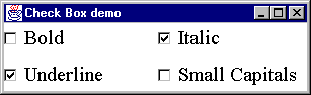

The Checkbox class-
toggle button example

0013 public class CheckExample extends Applet
0014 implements ItemListener {
0015
0016 private Checkbox boldButton;
0017 private Checkbox italicButton;
0018 private Checkbox underlineButton;
0019 private Checkbox smallcapsButton;
0020
0021 private init() {
0022 this.setLayout( new GridLayout( 2, 2, 5, 5));
0023
0024 boldButton = new Checkbox( "Bold");
0025 boldButton.addItemListener( this);
0026 this.add( boldButton);
0027
0028 italicButton = new Checkbox( "Italic");
0029 italicButton.addItemListener( this);
0030 this.add( italicButton);
0031
0032 underlineButton = new Checkbox( "Underline");
0033 underlineButton.addItemListener( this);
0034 this.add( underlineButton);
0035
0036 smallcapsButton = new Checkbox( "Small Capitals");
0037 smallcapsButton.addItemListener( this);
0038 this.add( smallcapsButton);
0039 } // End init.
This applet implements the ItemListener interface and so it can be specified (this) as the itemListener of the four Checkbox instances. However, in order to implement the ItemListener interface it must provide an itemStateChanged() action.
The Checkbox instances are presented as toggle buttons, as opposed to radio buttons, as they are not associated with any CheckboxGroup instance. As they are supplied as peer compoennts they will conform to the user's expectations, in this image they are supplied by Windows 95.